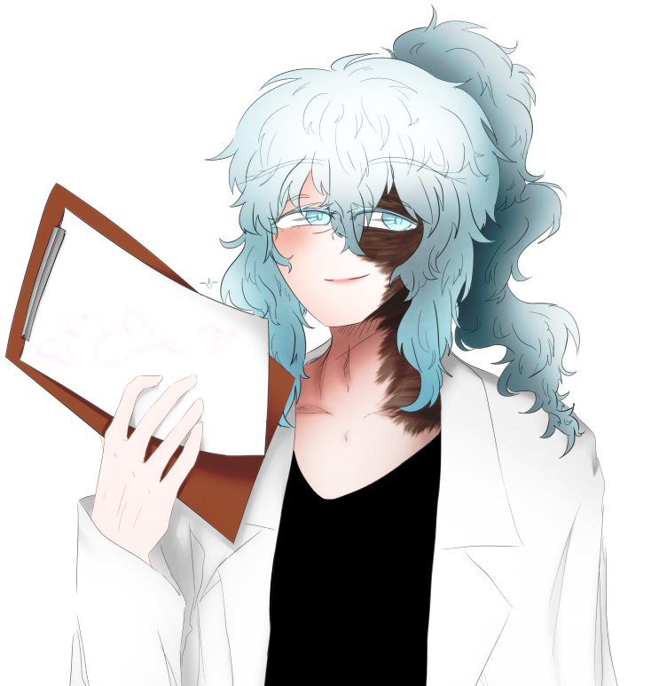

| 닥터 레이턴시 Dr. Latency |
|
|  | |
| 별칭 | 닥터, 박사넴, 레이, 레이튼시 |
| 나이 | 외관 상 : 30대 중후반 |
| 종족 | 크리살리스 |
| Sex / Gender | 남성 / 에이젠더 |
| 직업 | 수석 연구원 |
| 키 | 191cm (굽 미포함) |
| 몸무게 | 표준 -2kg |
| 혈액형 | O형 |
FNI
1. 외형
지푸라기 마냥 퍼석한 질감의 밝은 회백발은 유난히 차갑고 창백한 푸른 빛이 돈다. 평소에는 일할 때
기다란 머리카락이 거슬리는지, 똬리를 틀듯 두 번 묶거나 아래로 내려 묶는다. 풀면
적어도 허리 아래까지는 내려올 것 같은 긴 머릿칼에서는 은은한 와인 샴푸 향이 난다.
눈썹과
속눈썹 또한 탈색된 것 같이 푸른 빛이 도는 은백색이다. 눈꼬리는 아래로 축 쳐져 순둥해보이는 인상,
동시에 항상 살짝 웃는 것처럼 가늘게 접혀있다. 순수하게 빛나는 눈동자는 밝은 벽안으로, 언뜻 보면 설원을
연상시킨다.
얼굴에서 입꼬리의 바로 윗부분을 기준으로 왼쪽 얼굴은 모두 화상 자국으로 말라붙어있다. 그대로 목을 타고 내려가
등허리의 대부분, 그리고 왼쪽 손까지 화상 자국이 이어져있다. 화상 흉터를 드러내는 것에 거부감을 느끼지는 않지만 가끔은 눈에 띄지
않기 위해, 혹은 손에 습진이 생기지 않게 하기 위해 장갑이나 흉터 가리는 용도의 밴드를 붙인다. 화상 자국이 자리하지 않은 피부는
핏기 없이 창백한 편이다.
의복으로는 언제나 흰 색 계열의 옷만 골라입는 버릇이 있다. 사실 대부분의 근무 시간에는 무릎 아래까지
내려오는 실험 가운과 티 한 장, 슬랙스 한 장 정도만 걸치고 있다. 신발은 규정이 널널한 근무시간에 한해 여러 디자인과 색상의 하이힐을 신는다.
어쩔 수 없을 때에는 무난한 갈색 로퍼나 워커를 신는다.
키는 상당히 큰 편이다. 건장한 성인 남성 중에서도 독보적인 키, 거기에 하이힐까지
신게 되면 강한 인상을 준다. 얼굴에는 은근히 볼살이 남아있지만 가운 사이로 살짝 드러난 손목과 허리를 살펴보면 꽤 말라있다.
2. 성격
[ 유순한 ]
단순히 다정함과는 조금 차이가 있는 유순함인다. 어느 상황에서도 그저 부드러운 말투와 표정을 고수하고는 한다.
설령 심한 말을 듣더라도 항상 순종적이고 수동적인 면만 보이는 그의 모습은 어딘가 조금 불쌍해 보이기까지 한다.
" 괜찮아요, 전 상관 없어요. "
[ 속내를 읽을 수 없는 ]
적대감이라고는 눈꼽만치도 보이지 않는 선한 성격처럼 보이지만
그래도 어딘가 얕보기는 힘든 사람이다. 순하디 순한 페르소나의 뒷면을 절대로 보여주려들지 않는다. 어쩌면 사실 아무 것도 없고, 그냥 착한
사람일지도 모르지만...
" 저는 정말 아무것도 몰랐거든요~... "
[ 분위기메이커(가 되고싶은) ]
회사에서 낮은 서열의 사람이 곧잘 그러듯,
어색한 군중 속에서 분위기를 띄우려 안달내는 모습을 자주 보인다. 일부러 소리높여 인사하거나, 먼저 이야기를 이끌어내려고 하거나, 여튼 여러 방면으로
노력한다. 특유의 분위기 덕에 대부분의 시도는 좋은 쪽으로 이끌어지지만, 가끔 실패하면 대놓고 슬퍼한다.
" 당신은 절대로 경마장에 가지 말아주세요! 왜냐하면... 말이 안 나오니까. "
3-1. 호불호
우월한 사람을 좋아한다. 단순히 업무 처리 능력이 좋거나 신체능력이 뛰어난 일반인도 좋아하지만, 인외종이나 특수한 능력이 있는 사람을 정말 좋아한다. 이 '좋아한다'는 동경의 의미기도, 존경의 의미기도 하지만, 대부분의 경우에는 '저걸 연구해보고 싶다'는 욕구의 의미로써 통한다. 그런 의미에서 특수한 사람들에게 꽤나 친절하게 대해준다. 사실 모든 사람들에게 친절한 편이지만, 연구원의 신분으로서는 흔치 않은 일이다. 오히려 능력을 칭송하며 북돋아두는 경향이 강하다.
3-2. 취미
구두 수집이 소소한 취미이다. 특히 여성용 하이힐에 깊은 관심을 보이고 있으며, 개인 사무실의 사적인 공간 한 켠에 전시대까지 마련했을
수준이다. 단순히 수집하고 감상하는 것도 본인이 신는 것도 모두 좋아한다. 업무 중이 아닐 때, 개인 시간이나 외출할 때에 연한 하늘색의 굽 높은
하이힐을 즐겨신는다. 의외로 수집한 구두를 꽁꽁 아껴놓는 스타일은 아니라 다른 연구원들이 원하면 구경하게 해주거나 빌려주기도 한다.
4~6인용 정도의 보드게임을 좋아한다. 카드 한 벌로 할 수 있는 간단한 게임에서부터 아발론, 루미큐브, 뱅 등... 머리를 조금 굴려가며 모여앉아 즐길
수 있는 보드게임을 선호한다. 게임에 대한 집착은 상당하지만, 성격에 결함이 있는 그로서는 연구소 내에서 4~6명의 친구를 모으기 함들 뿐만 아니라
여유 시간이 없어 자주 하지는 못한다.
3-3. 직업
재단 산하의 연구소에서 연구원으로서 일하고 있다. 연구소장 바로 아래의 수석 연구원의 직급을 갖고 있으며, 이 연구소에서만 적어도
20년 이상 일해왔다. 책임 연구원들을 이끌고 연구소 경영활동의 일부에 참가하는 정도의 지위지만, 동시에 견제를 많이 받고 있다.
연구소 내부의 대부분의 연구활동을 관리감독하지만 주로 관심갖는 분야는 인외종의 조사 및 연구. 기업의 후광을 이용해 외국에서 인외 생물을
많이 사들이고 있다. 특수 능력자 연구의 경우, 인외종에 비해 의외로 그렇게 큰 관심을 가지고 있지는 않았었으나, 일반인의 나비 개화를 체험한 이후
관심도가 올라갔다.
4. 기타
언제나 웃는 상이다, 언제나! 호선을 그린 눈을 살포시 감고 눈웃음치며 말꼬리를 늘여가며 말하는 모습은 처음 만나는 사람에게도
호감을 사기 쉽다. 반면 오랫동안 그 모습을 봐 오던 사람에게는 조금 위선적으로 보일 지도.
상대의 나이나 지위에 상관없이
무조건적으로 존댓말만 사용한다. 예의를 차리는 의미도 있겠지만, 자신과 상대의 사이에 선을 긋는 의미 또한 내포하고 있다. 그렇지만
아무리 친해져도 편하게 반말을 나누는 사이가 되기는 어려울 것이다.
6. 주변 관계
 폰 테오도르 - 귀여운 실험체
폰 테오도르 - 귀여운 실험체
단아 - 갖고싶은 인외1. 손에 관심이 많다!
기프트(레테) - 사랑하는 불쌍한 연인(계약 연애)
오세나 - 운명공동체. 크리살리스로 만들어주었다.
 이선우 - 직업 상 동료이자 경쟁자
이선우 - 직업 상 동료이자 경쟁자
미셰 - 여러 조언을 듣고 있다. 취미 공유는 덤. 아직은 조금 경계하고있다.
레이 - 미셰를 통해 소개받았다. 집적대는 중.
야샤 - 상사